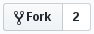

Bonjour
Git
Git est un logiciel de gestion de versions décentralisé, c'est à dire un logiciel qui permet de stocker un ensemble de fichiers en conservant la chronologie de toutes les modifications qui ont été effectuées dessus, en permettant à chacun de travailler à son rythme, de façon désynchronisée des autres, et d'offrir un moyen à chacun des développeurs de s'échanger leur travaux respectifs.
GitHub
GitHub est un service web d'hébergement et de gestion de développement de logiciels, utilisant le logiciel de gestion de versions décentralisé Git.
${variable}
Ce site est moche !
Changeons les couleurs.
Faire un fork de la branche "master"
Petit bouton en haut à droite

Trouver son fork, aka "origin"
https://github.com/${username}/mind-up-git-introduction
Cloner origin
$ git clone https://github.com/${username}/mind-up-git-introduction.git
Aller dans le dossier
$ cd mind-up-git-introduction
$ ls
$ dir
Status
$ git remote -v
$ git branch -a
$ git status
$ git log
Ajouter la référence vers upstream
$ git remote add upstream https://github.com/mind-up/mind-up-git-introduction.git
$ git remote -v
$ git branch -a
$ git status
Créer une branche, pour compartimenter
$ git checkout -b ${branche}
Partir d'une base saine
$ git reset --hard upstream/master
Status
$ git remote -v
$ git branch -a
$ git status
$ git log
Trouver où travailler
$ grep -nr '${mot}' ./
Travailler
Vérifier ses changements
$ git diff
Ajouter ses changements
$ git add ${fichiers}
Acter ses changements
$ git commit -m "${message}"
Envoyer ses changements
$ git push origin master
Faire une Pull Request
https://github.com/${username}/mind-up-git-introduction
Discuter les changements
Ajouter de nouveaux changements
Travailler
Vérifier ses changement
Ajouter ses changements
Acter ses changements
Envoyer ses changements
Vérifier les changements
Valider les changements
Supprimer sa branche en ligne
Créer une nouvelle branche
$ git checkout -b ${branche}
Partir d'une base saine
$ git reset --hard upstream/master
Status
$ git remote -v
$ git branch -a
$ git status
$ git log